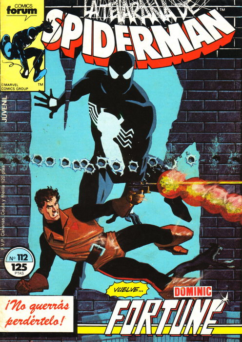
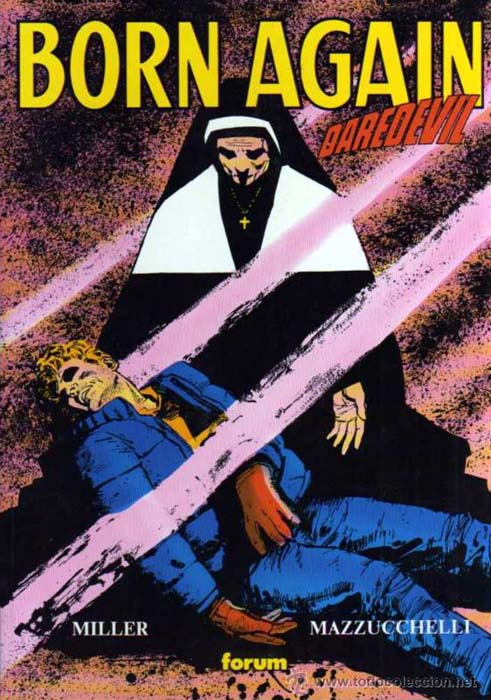
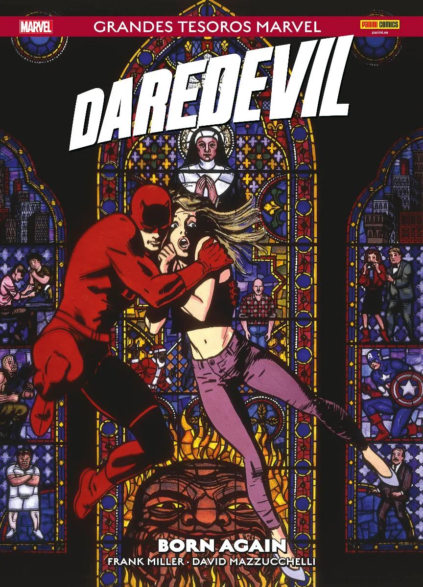

Daredevil en sus primeros años. Dibujo de Bill Everett.
Frank Miller se dio a conocer al gran público en la serie de
Marvel Daredevil. La colección del diablo de la cocina del
infierno, un personaje de segunda fila creado por Stan Lee y Bill
Everett en 1962, agonizaba por falta de ventas a finales de los
70. Pese a haber disfrutado del trabajo de autores de reconocida
fiabilidad como Lee, Roy Thomas, Gerry Conway, Steve Gerber, Gene
Colan o Bob Brown, Daredevil no conseguía deshacerse de su imagen
de Spider-Man de baratillo y su periodicidad bimestral era muestra
de que se hallaba al borde de la cancelación.
Y en esas que llegó Miller…
Daredevil según John Romita.
Ilustrando los guiones de un eficaz Roger Mckenzie, Miller empezó
a cambiar la estética y la narrativa de la colección, pero fue su
ascenso a autor completo lo que cambió el panorama por completo. A
partir del número 168, publicado a finales de 1980, eclosiona un
autor nuevo, distinto, fresco y rompedor, que renovaría por
completo al personaje y establecería las bases de la que iba a ser
la mejor década del comic de superhéroes. Aprovechando la absoluta
libertad que le dio el editor Denny O’Neil (total, la colección
estaba al borde de la cancelación), Miller desplegó toda su
imaginación y las influencias narrativas adquiridas de las obras
de Will Eisner, el manga y el cine japonés creando un cómic
diferente a cualquier otra cosa que se hubiera hecho en el género
pijamero. Pocas veces un autor ha marcado tanto a un personaje
como en el caso que nos ocupa. No es ninguna exageración decir que
Daredevil era un personaje cuando cayó en las manos de Frank
Miller y se convirtió en otro totalmente distinto. Para siempre.
Daredevil según Gene Colan.
Extenuado por el ritmo de una entrega mensual y atraído por los
cantos de sirena de DC cómics, que le ofrecía la posibilidad de
desarrollar obras de duración limitada y con una calidad de
reproducción sensiblemente superior, Miller abandonó Daredevil
para encargarse de la renovación de Batman y de una obra
totalmente nueva llamada Ronin. Mientras tanto, el diablo de la
cocina del infierno quedó en manos de Denny O’Neil que, pese a
desarrollar un trabajo cuanto menos estimable, no pudo en ningún
caso igualar las cotas de excelencia de su predecesor. Era una
batalla que tenía perdida de antemano.
No obstante, un detalle importante conviene ser tenido en cuenta:
a mitad de dicha etapa, y tras varios cambios de dibujantes entre
discretos y eficaces (Klaus Janson, William Johnson…), la entrada
de un joven de inmenso talento llamado David Mazzuchelli pasó en
un principio desapercibida por el entintado de Danny Bulanadi,
pero en cuanto Mazzuchelli se hizo cargo de todo el apartado
artístico, la serie alcanzó unas cotas de excelencia gráfica que
no tenía desde los tiempos de Gene Colan.
Daredevil y Bullseye. Dibujo de Bob Brown.
Daredevil con Elektra, creación de Frank Miller para la
colección.
La obra
La caída de Matt Murdock
Las siete portadas originales de Born Again, publicadas en
Daredevil entre los números 227 y 233 (1986).
Publicada originalmente en Daredevil #227–233, en 1986, Born Again
presenta a Matt Murdock en uno de los momentos más difíciles de su
vida.
Cuando Kingpin descubre su identidad secreta, comienza una campaña
para destruir todo aquello que Matt ha construido. La historia
explora la pérdida, la resistencia y la posibilidad de empezar de
nuevo.
Y en esas que volvió Miller…
Tres años después, y tras un par de números sueltos para retomar
el pulso a la serie, Miller vuelve al personaje que lo convirtió
en leyenda. Ya no será el autor completo ni el autor regular. Su
estancia en la colección se limitará a siete números, donde
desarrollará una intensa historia de caída y resurrección de Matt
Murdock (el alter ego de Daredevil) para llevarlo a límites a los
que jamás ningún autor había osado llevar a ningún superhéroe.
Pese a que la obra echará en falta por momentos el nervio
narrativo del Miller dibujante, la excelencia gráfica de
Mazzuchelli lo compensará sobradamente.
Primera página de Born Again, en la que Karen Page revela la
identidad secreta de Daredevil.
Página de Born Again con una pelea que muestra la degradación
de Matt Murdock urdida por Kingpin.
El punto de partida de la historia es tan sencillo como demoledor:
Karen Page, la exsecretaria de Murdock y el primer amor que le
conocimos, la cual llevaba años desaparecida, ha caído en las
drogas y en el cine porno y vende su más preciada posesión, la
identidad secreta de Daredevil, por una dosis. La información
llega a manos de Kingpin, el rey de los bajos fondos de nueva
york, que urde una compleja trama para hundir anímica y
económicamente a su más odiado enemigo. Atrapado en la telaraña
urdida por Kingpin, Murdock perderá su licencia para ejercer la
abogacía, su casa y sus amigos, quedando al borde de la locura.
La narración en primera persona queda limitada a Murdock y a Ben
Urich, un periodista que averiguó su identidad secreta en el
pasado, pero que decidió guardar el secreto. El resto de
personajes, tanto Kingpin como los más cercanos a Daredevil,
quedan relegados a una narración en tercera persona.
01. ApocalipsisEl hogar y la seguridad.02. PurgatorioUn motel de mala muerte.03. PariaLa calle. El fondo de su caída.04. Nacer otra vezEl refugio y la esperanza.
El inicio de los cuatro primeros capítulos de Born Again nos
muestra a un Murdock durmiendo en un progresivo proceso de
degradación. Las referencias bíblicas serán constantes, desde una
página completa homenajeando a la Pietà de Miguel Ángel a un Ben
Urich negando hasta tres veces a Matt Murdock (San Pedro), pasando
por el descubrimiento de que la madre de Murdock sigue viva y es
una monja. Es, en definitiva, el mito de la caída y resurrección
encarnado en esta ocasión por un personaje que no parecía llamado
a protagonizar una obra maestra de este calado… pero que tuvo la
fortuna de caer en las manos de Frank Miller en el momento
indicado.
La iconografía religiosa, uno de los elementos centrales de
Born Again. Dibujo de David Mazzucchelli.
El reencuentro de Matt Murdock y Karen Page. Dibujo de David
Mazzucchelli.
Born Again es uno de los mejores cómics Marvel de la historia,
mucha gente lo considera el mejor, y sin duda uno de los pocos
cómics de superhéroes que han trascendido a su género. A pesar de
la brillante trayectoria de sus autores, muchos consideramos que
esta caída y resurrección de Matt Murdock fue el punto álgido de
sus respectivas carreras.
Un clásico imprescindible.
Los creadores
Dos autores en estado de gracia
Frank Miller
Guion
Frank Miller (1957) es uno de los autores más influyentes del
cómic estadounidense contemporáneo. Su llegada a
Daredevil a finales de los años setenta, primero como
dibujante y posteriormente también como guionista, transformó al
personaje mediante un enfoque más oscuro, urbano y cercano a la
novela negra. Obras como
Batman: El regreso del Caballero Oscuro y
Sin City consolidaron su prestigio y su influencia en
el medio. En Born Again, Miller regresó a la colección
para desarrollar una historia centrada en la destrucción
personal de Matt Murdock y su posterior reconstrucción. Su guion
combina elementos del relato criminal, el drama psicológico y el
simbolismo religioso, llevando al protagonista a uno de los
momentos más extremos de su trayectoria.
David Mazzucchelli
Dibujo
David Mazzucchelli (1960) es un dibujante estadounidense
reconocido por su capacidad narrativa y por la evolución de su
estilo a lo largo de su carrera. Tras trabajar para Marvel
durante los años ochenta, alcanzó especial reconocimiento
gracias a sus colaboraciones con Frank Miller en
Daredevil: Born Again y Batman: Año Uno.
Posteriormente orientó su trayectoria hacia proyectos más
personales, entre los que destaca Asterios Polyp. En
Born Again, Mazzucchelli desarrolla una narrativa
visual precisa y expresiva, en la que la composición de las
viñetas, el lenguaje corporal y el uso de las sombras refuerzan
el contenido emocional de la historia. Su dibujo resulta
fundamental para transmitir tanto la vulnerabilidad de Matt
Murdock como la atmósfera opresiva que caracteriza a la obra.
Historia editorial
Ediciones españolas
Desde su publicación original en Estados Unidos, Daredevil: Born
Again ha conocido distintas ediciones en España. Este apartado
repasa su trayectoria editorial, sus formatos y las particularidades
de cada publicación.

Spiderman n.º 112, donde comenzó a publicarse Born Again.
La primera edición de Born Again en España fue un
auténtico despropósito. La editorial licenciataria de Marvel en
aquella época (Planeta DeAgostini, en su sello Cómics Fórum) había
cancelado la colección de Daredevil por falta de ventas en su
número 40, en junio del 86. La etapa de Miller había finalizado en
el número 22 y muchos aficionados se retiraron de la colección con
la llegada de Denny O’Neil, pues sus primeros dibujantes suponían
un bajón sensible con respecto a Miller. Para cuando se consolida
David Mazzucchelli ya era tarde y la cancelación fue inevitable.
Aprovechando el cambio de periodicidad de quincenal a semanal, la
colección de Spiderman albergó como complemento a Daredevil a
partir de su número 95 (julio del 86).
Al convertirse en un complemento, Daredevil pasó a publicarse con
episodios fraccionados, teniendo que imprimirse alguna página en
las contraportadas del cómic, algo que hoy sería absolutamente
impensable. Born Again
empezó a serializarse en el número 112 de Spiderman, dándose la
paradoja de que durante los ocho meses que se publicó la obra de
Miller y Mazzucchelli, la calidad del complemento de los cómics de
Spiderman era abismalmente superior a la del tebeo principal.
Recuerdo aquella experiencia como algo único. Cada viernes iba al
quiosco a comprar mi ejemplar de Spiderman y en cuanto llegaba a
casa lo abría en la página 23 o 24 para seguir el infierno en el
que se había convertido la vida de Daredevil. Spiderman, que
siempre ha sido mi personaje de ficción favorito, quedaba para más
tarde.

Obras Maestras n.º 1. Fórum, 1991.
Mucha gente no entendió aquella decisión editorial que, vista con
los ojos de un lector de 2026, sería intolerable, pero hay que
entender las cosas según su contexto. La colección de Daredevil
había cerrado por falta de ventas y los intentos de Forum por
experimentar con formatos más caros que las grapas de 32 páginas
(las novelas gráficas y los tomos extra-superhéroes) habían sido
un absoluto fracaso. O se publicaba como complemento o no parecía
haber ninguna otra fórmula para poder publicarlo.

Grandes Tesoros Marvel. Panini Cómics.
La afrenta de publicar una de las grandes obras maestras de la
historia del cómic de superhéroes de una manera tan indigna no fue
subsanada hasta septiembre de 1991. En el número 1 de la colección
Obras Maestras, Forum recuperó la obra de Miller y
Mazzucchelli en un tomo de 176 páginas que tuvo una segunda
edición en 1999.
Después de este, vinieron multitud de ediciones más, ya con la
licenciataria que sucedió a Planeta, Panini Cómics. De entre todas
ellas, merece la pena destacar la edición en tomo gigante de
Grandes Tesoros Marvel, donde el arte de David
Mazzucchelli brilla en su máximo esplendor.